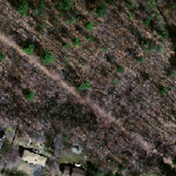
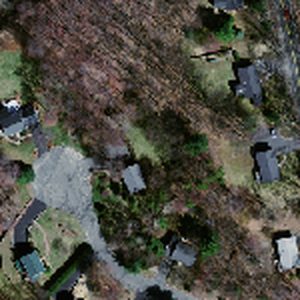
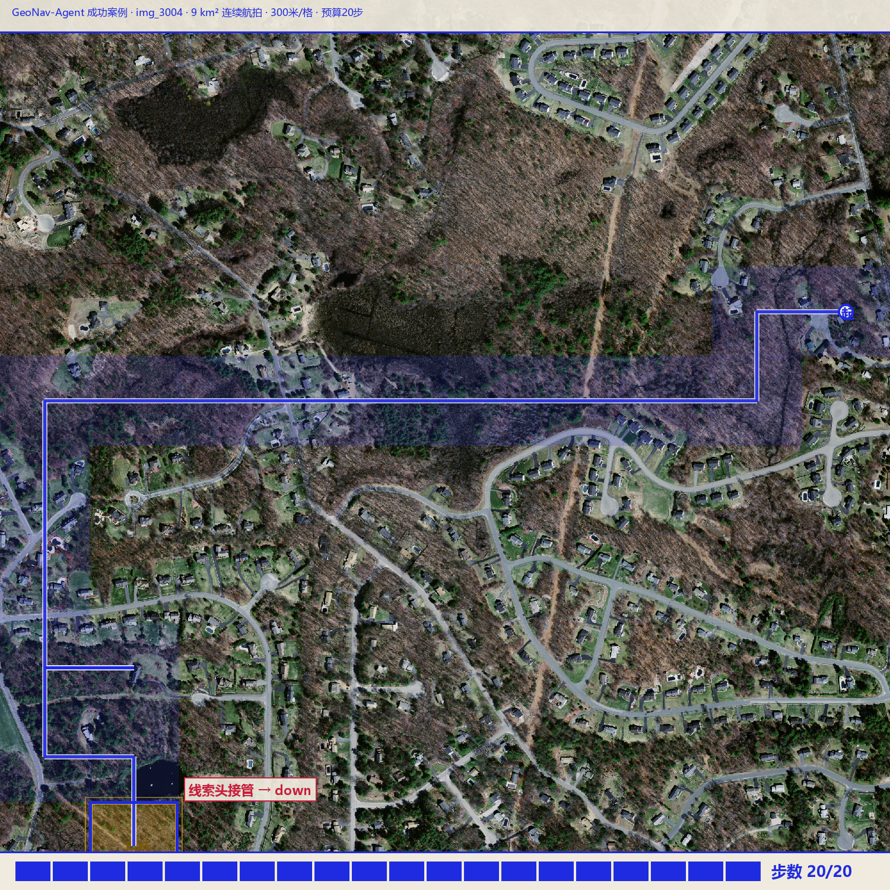

实际用途示例：一句需求，如何变成无人机的 20 步
以下全部取自项目真实运行记录（img_3004 区域 · 9 km² 连续航拍 · Massachusetts Roads 源图 19978915_15 · 径向保护独立确认批次 · 种子 s0），非示意图。
① 指挥端提出的实际需求
“这里是灾区以东 9 平方公里的航拍底图。侦察组在目标点拍到了一张参考照片（下图左）——河道拐弯、三岔路口、田埂走向都在里面。
一架无人机在 2.7 公里外投放，只带相机、没有 GPS。20 个动作单元内飞到照片对应的那个位置，超时即任务失败。”
② 平台把需求翻译成任务

目标参考照片（300×300 米真实图块）
交给系统的全部目标信息就这一张图：金框在底图上的位置，系统知道、无人机永远不知道。
交给系统的全部目标信息就这一张图：金框在底图上的位置，系统知道、无人机永远不知道。
＋

无人机脚下第一眼（投放点实拍）
每一步只能看到自己所在格的画面，四邻格未到达前一律不可见——部分可观测，靠移动换信息。
每一步只能看到自己所在格的画面，四邻格未到达前一律不可见——部分可观测，靠移动换信息。
＋
任务参数（对应真实世界）
网格：10×10 格，每格 300 米 → 全图 3×3 km = 9 km²
预算：20 步 = 最多 6 km 航程
起点到目标任务距离：14 格（曼哈顿口径）≈ 4.2 km
成功判定：走进目标格（左下金框）
网格：10×10 格，每格 300 米 → 全图 3×3 km = 9 km²
预算：20 步 = 最多 6 km 航程
起点到目标任务距离：14 格（曼哈顿口径）≈ 4.2 km
成功判定：走进目标格（左下金框）
③ 无人机怎么找：每一步都在回答一个问题
第 1–13 步 · 探索器铺路无目标输入的 GRU 策略按地形结构推进：向西横穿 2.4 km，再沿西边界南下。每步线索头都在比对“目标图 vs 脚下四邻”，证据不足就弃权——宁可继续探索，不乱猜方向。
第 14/16/18/19 步 · 径向保护纠偏探索器几次想回头走已看过的格子，规则层直接改写为远离起点方向（金标签）：禁止打转，6 km 航程一米不浪费。
第 20 步 · 线索头接管命中当目标与某邻格的边缘接缝逐段吻合（颜色误差+梯度误差+相关性 ≥0.50 置信），线索头接管决策：向下。第 20 步——预算最后一格——踏入目标（红标签）。
④ 走一遍全程（真实轨迹帧，点图可放大）

第 0 步：投放。起=右上，目标=左下金框，任务距离 14 格 ≈ 4.2 km。

第 10 步：向西横穿完成，行程 3 km，线索头仍未接管（目标还远，证据不足）。

第 14 步：探索器想回头，被径向保护改写为向右（金标签）。

第 20 步：线索头接管（红标签）→ 命中金框。步数 20/20，SG=0。
⑤ 换算回实际场景意味着什么
在这套 9 km² 区域、20 步预算的正式确认里，该方法三权重平均成功率 68.04%（同题旧基线 58.84%，10 个新区全部提升，750 条轨迹独立复核）；本次案例是其中一次“零浪费”成功：6 km 航程全部用于接近目标。
边界同样要交代：这是同源同向航拍切图仿真，目标必须是同模态航拍图块；地面照片指定目标、任意角度、异时影像属下一阶段工作。